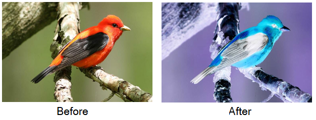

Basic File I/O in Rust
Opening a file and writing some data
use std::fs; use std::io; use std::io::{SeekFrom}; use std::io::prelude::*; fn main() { let mut fp = fs::OpenOptions::new() .create(true) .write(true) .open("test.txt") .unwrap(); fp.write_all(b"1"); fp.write_all(b"2"); fp.write_all(b"3"); fp.seek(SeekFrom::Start(0)); fp.write_all(b"4"); fp.write_all(b"5"); }
Output file (test.txt)
453
Points
- We use the
std::fs::OpenOptionsbuilder class to create aFile(file handle object). create(true)- create a new file if t does not existwrite(true)- open file with write permission- After calling
open(filepath), the builder class returnsResult<File>- we can handle an error here write_all- get bytes as input, and write to file.- File handle cursor will be repositioned after calling
write_all, but we can manually move it with theseekfunction (becauseFileimplement Traitio::Seek) seekreceives a parameterSeekFromobject in 3 variants- Start(u64) : Seek from beginning of file
- Current(u64) : Seek from current position of
Cursor - End(u64) : Current size of file plus position
- The file handle automatically closes after the lifetime of file handle object ends. (In C/C++ we need to call fclose(FILE *fp) manually)
Serialize/Deserialize file by JSON
There's a wonderful library called serde_json. With this, we can easily/safely serialize/deserialize structured data to a text format.
use serde::{Deserialize, Serialize}; use serde_json::Result; use std::fs; use std::io::prelude::*; #[derive(Debug, Serialize, Deserialize)] enum Role { Attacker, Support, Tanker } #[derive(Debug, Serialize, Deserialize)] struct Player { id: u32, name: String, role: Role } #[derive(Debug, Serialize, Deserialize)] struct Party { name: String, members: Vec<Player> } fn main() { let alice = Player { id: 1, name: "Alice".to_string(), role: Role::Support }; let bob = Player { id: 2, name: "Bob".to_string(), role: Role::Tanker }; let prim = Player { id: 3, name: "Primula".to_string(), role: Role::Attacker }; let x = Party { name: "For Fun".to_string(), members: vec!(alice, bob, prim) }; let json = serde_json::to_string(&x).unwrap(); println!("{}", json); println!(); { let mut fp = fs::OpenOptions::new() .create(true) .write(true) .open("party.json") .unwrap(); fp.write_all(json.as_bytes()); } let mut fp = fs::OpenOptions::new() .read(true) .open("party.json") .unwrap(); let mut buffer = String::new(); fp.read_to_string(&mut buffer); let x_ds: Party = serde_json::from_str(&buffer).unwrap(); println!("{:?}", x_ds); }
Points
- We use
serde_json::to_string(&str)to encode struct to JSON, and in the same way, we useserde_json::from_str(&str)to decode JSON back to struct. - To make structs serializable with serde, we need to
#[derive()]the macro calledSerializeandDeserializefor deserializing.
Binary File with Rust
Saving a struct with Binary-Encoding in Rust can be done using library called bincode combined with serde's macro. We migrate our previous code as follows:
use serde::{Deserialize, Serialize}; use std::fs; use std::io::prelude::*; use std::io::SeekFrom; #[derive(Debug, Serialize, Deserialize)] enum Role { Attacker, Support, Tanker } #[derive(Debug, Serialize, Deserialize)] struct Player { id: u32, name: String, role: Role, money: u32 } #[derive(Debug, Serialize, Deserialize)] struct Party { name: String, members: Vec<Player> } fn main() { let alice = Player { id: 10, name: "Alice".to_string(), role: Role::Support, money: 10 }; let bob = Player { id: 1000, name: "Bob".to_string(), role: Role::Tanker, money: 255 }; let prim = Player { id: 100000, name: "Primula".to_string(), role: Role::Attacker, money: 1000 }; let x = Party { name: "For Fun".to_string(), members: vec!(alice, bob, prim) }; let bin = bincode::serialize(&x).unwrap(); println!("{:?}", bin); println!(); let mut fp = fs::OpenOptions::new() .create(true) .write(true) .open("party.dat") .unwrap(); fp.write_all(&bin); }
Points
- Because the output file
party.datis binary file, we cannot open normally in a basic Text Editor (Actually, we can open but it may display badly and/or be missing lots of information) - To properly open binary files, we use a
Hex Editor. there are many free ones:
Understanding Binary Encoding
Let's dig a bit deeper on the resulting bincode serialization.

For those who may not familiar with hex editors, the two numbers in each of the columns represent one byte in file (in Haxadecimal). Let's look at our serialized struct Party again.
# #![allow(unused_variables)] #fn main() { struct Party { name: String, members: Vec<Player> } #}
And let's compare with the first 15 bytes for file
07 00 00 00 00 00 00 00 46 6F 72 20 46 75 6E
The part 46 6F 72 20 46 75 6E in the bytes represents the ASCII number of String 'For Fun'. The first 8 bytes represents the length of this String. Someone may ask why use 8 bytes to store, it might be Rust (or bincode) use u64 data format to store the lenght of string. (00 00 00 00 00 00 00 07 is 7 in decimal format)
Another interesting, why is its order reversed?! The reason is bincode respects the machine's Memory Layout, It's use the same layout, u64, as RAM storage.
Ok, let's see for next 8 bytes. It's u64 again. By using method above, we got
03 00 00 00 00 00 00 00 ---> 3 (decimal)
This is the size of Party.members vector. bincode stores the size of vector before the real vector's content.
Now that we are familiar with binary files, let's take the next one more quickly. The first item in vector is a struct with data:
# #![allow(unused_variables)] #fn main() { Player { id: 10, // u32 name: "Alice".to_string(), // lenght = 5 role: Role::Support, // u32's Enum (by default) money: 10 // u32 } #}
And here how stored in Hex form:

0x0000000A = 10 ; id
0x0000000000000005 = 5 ; String.len()
0x416C696365 = 'Alice' ;
0x00000001 = 1 ; Role::Support
0x0000000A = 10 ; money
I will leave the rest of the data for you to practice.
Cautions about using binary file
Binary files are smaller, and in most cases, faster than json serialization but there's some considerations:
- Binary files are hard to read by humans and cannot be modified by text editors.
- If we change the structure of data, we can no longer use the saved file (without conversion or tweaking the read/write logic). For example:
- Swap the order of struct's member
- Change the size of struct's member
- It lacks a universal standard format comparing to JSON.
Homework (Playing with a BMP File)
Let's create an inverse filter for Bitmap File (.bmp) by using Binary File I/O.
Your program reads an input bmp file, and creates an output bmp file, with the inverse filter applied.

The Bitmap file is one of uncompressed image format. In this case we use a normal 24-bit RGB image.
The File header(the beginning of file) of BMP File is 14 bytes long with this information
# #![allow(unused_variables)] #fn main() { { // MagicNumber: 2 bytes // FileSize: 4 bytes // Reserved: 4 bytes (not important) // StartAddress: 4 bytes } #}
two important values in here are FileSize and StartAddress.
FileSize is the size of BMP File on disk, StartAddress is the start address of pixel data.
if you use hex editor to see the content at StartAddress, you will see each pixel data store in this pattern:
[blue: u8] [green: u8] [red: u8] ....
The color in each RGB channel is stored in reverse order. And the byte order is from last row of pixels to first row of pixel. (Anyway, this is not important for our exercise)
To create an inverse filter, we have to invert the bit of pixel data in every bytes. (0 to 1, 1 to 0)
In rust, we can use the bitwise logical operator !
# #![allow(unused_variables)] #fn main() { let mut x: u8 = 254u8; x = !x // x is now 1 // 254 (1111 1110) ---> 1 (0000 0001) #}
Ok, I hope you now have enough information to implement this program.
Hint
- In this case, we can skip working on Bitmap's DIB part (the content after header and before pixel data), but we still have to copy all of those bytes to output file.
- You may have to use
seekfunction
More information about bitmap, you can look at wiki